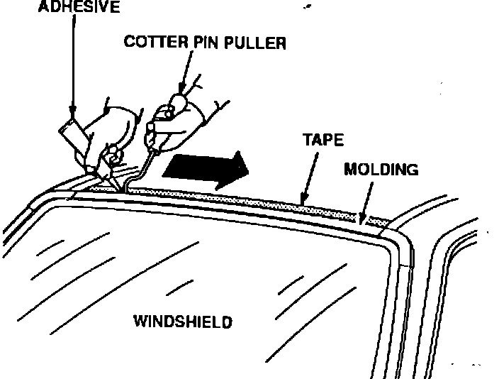

Windshield Molding - Hum or Whine Noise
91acura05
November 11, 1991
BULLETIN No.
89-030
YEAR MODEL VIN APPLICATION
1990-91 INTEGRA See VEHICLES
1992 VIGOR AFFECTED
Noise from Upper Windshield Molding (Supersedes 89-030, dated January 29, 1990)
SYMPTOM
A "hum" or "whine" from the upper part of the windshield when the car is driven at highway speeds.
NOTE: Driving the car into a headwind increases the air velocity across the molding, making the noise more noticeable.
VEHICLES AFFECTED
Integra: ALL 1990-91
Vigor: up to VIN CC2 ... NC013359
PROBABLE CAUSE
A loose upper windshield molding.
DIAGNOSIS
Method No. 1:
A. Test drive the car at highway speeds and listen for the noise.
^ If you hear the noise, stop the car and mask off the edges of the upper windshield molding and the upper corner moldings.
^ If you can't hear the noise, go to method 2.
B. Test drive the car again.
^ If you do not hears the noise with the molding masked off, the upper windshield molding is the cause.
Method No. 2:
If you cannot verify the noise within the allow able speed limits do the following:
^ With an assistant inside the car, direct compressed air over the upper windshield molding.
^ While testing, hold the nozzle about 1/2" from the molding and move it back and forth across the length of the molding.
^ If the assistant hears the noise inside the car, the upper windshield molding is the cause.
CORRECTIVE ACTION
1. Install a 2" wide length of masking tape to the roof edge adjacent to the upper windshield molding. Be sure to tape over the painted areas adjacent to the corner moldings.

2. Apply a liberal amount of 3M Black Super Silicone Sealant or equivalent to the underside of the upper molding and the upper corner moldings.
NOTE: A "cotter pin puller" can be used to raise the lip of the molding as you apply the adhesive.
3. Remove any excess sealant from the windshield and the allow the sealant to cure.
4. Remove the masking tape.
WARRANTY CLAIM INFORMATION
In warranty: The normal warranty applies.
Out-of-warranty: Any repair performed after warranty expiration may be eligible for goodwill consideration by the District Service Manager. You must request consideration, and get the DSM's decision, before starting work.
Operation number: 824050
Flat rate time: 0.5
Failed P/N: 73151-SK7-003
Defect code: 004
Contention code: B07